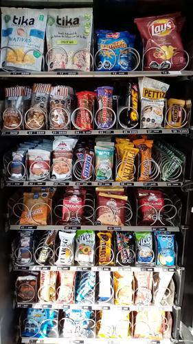
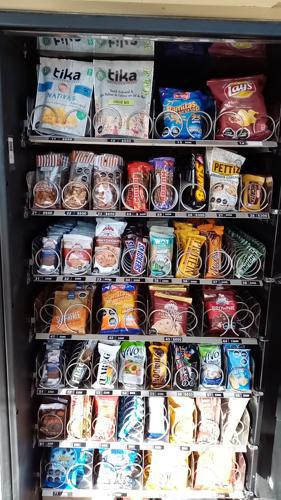

Antes de AbastecerNo se detectaron espirales vacios.

id 377.755 |
Luego de AbastecerNo se detectaron espirales vacios.

id 377.756 |
|
| Fecha |
Reporte |
Vacios ANT |
% Abast |
% Quiebre |
Sum QTY |
Rotación Diaria |
Abast hace (días) |
| 26-07-2021 |
Viendo |
0 |
5.1 |
0.0 |
38 |
12 |
3 |
| 23-07-2021 |
Ver |
0 |
13.5 |
0 |
101 |
50 |
2 |
| 21-07-2021 |
Ver |
1 |
6.4 |
2.5 |
48 |
24 |
2 |
| 19-07-2021 |
Ver |
1 |
10.5 |
2.5 |
79 |
15 |
5 |
| 14-07-2021 |
Ver |
0 |
7.9 |
0 |
59 |
29 |
2 |
| 12-07-2021 |
Ver |
2 |
2.1 |
5.0 |
16 |
5 |
3 |
|
|
|
Se abasteció la máquina con:
Total de 38 unidades de 4 productos.
| Qty. |
Producto |
SubFamilia |
Familia |
| 12 |
Brownie Nutrabien Display |
Brownie |
Snack |
| 10 |
Ramitas Queso Evercrisp |
Salados |
Snack |
| 6 |
Papas Fritas Tika Chiloe |
Salados |
Snack |
| 10 |
De Todito I Evercrisp 50G |
Snack |
Snack |
| Productos más abastecidos en últimas 6 semanas:
| Nro. Abast |
Qty/Abast |
Producto |
Abast hace (días) |
Fecha |
| 6 |
12 |
Muibon Mani 40G 12U |
5 |
21-07-2021 |
| 6 |
10 |
Mini Selz 45 Gr |
3 |
23-07-2021 |
| 5 |
24 |
Super Ocho Clasico 24 Gr |
3 |
23-07-2021 |
| 5 |
11 |
Frac Clasica Individual 3 |
14 |
12-07-2021 |
| 5 |
9 |
Galleta Din Don 24Ux46Gr |
5 |
21-07-2021 |
| Productos menos abastecidos en últimas 6 semanas:
| Nro. Abast |
Qty/Abast |
Producto |
Abast hace (días) |
Fecha |
| 1 |
2 |
Galletas Chocolate Sin Az |
12 |
14-07-2021 |
| 1 |
3 |
Mifrut Vivo Durazno 90 Gr |
38 |
18-06-2021 |
| 1 |
5 |
Papas Mediterraneas Jamon |
26 |
30-06-2021 |
| 1 |
6 |
Papas Fritas Tika Patagon |
21 |
05-07-2021 |
| 1 |
6 |
Papas Fritas Tika Chiloe |
0 |
26-07-2021 |
|
|